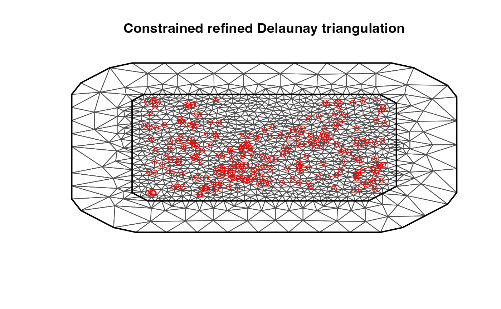
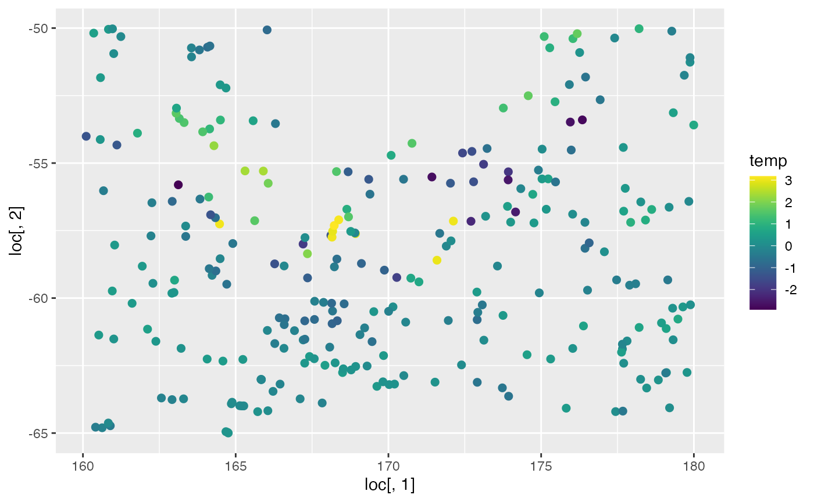
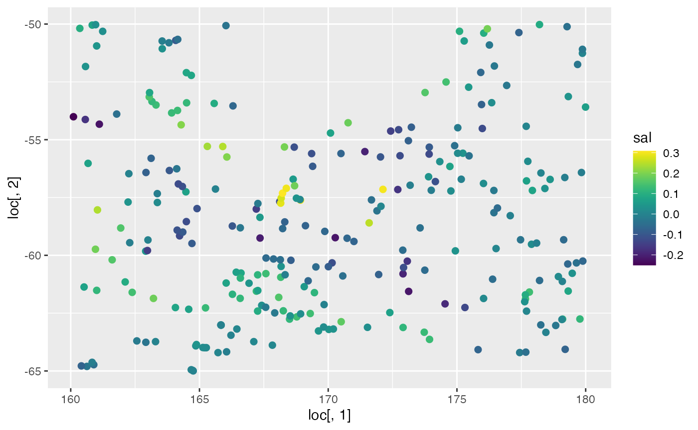
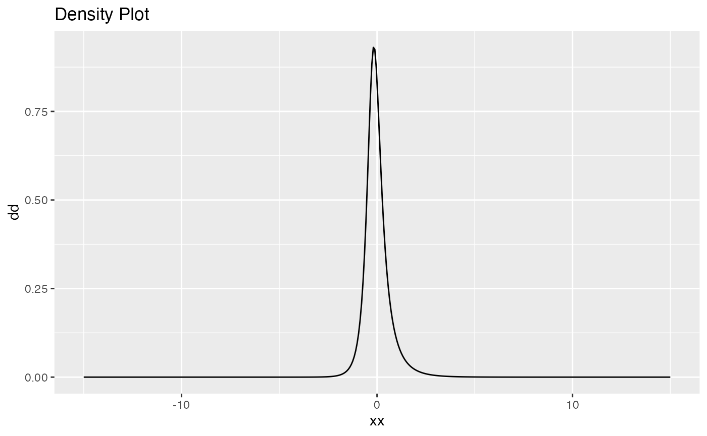
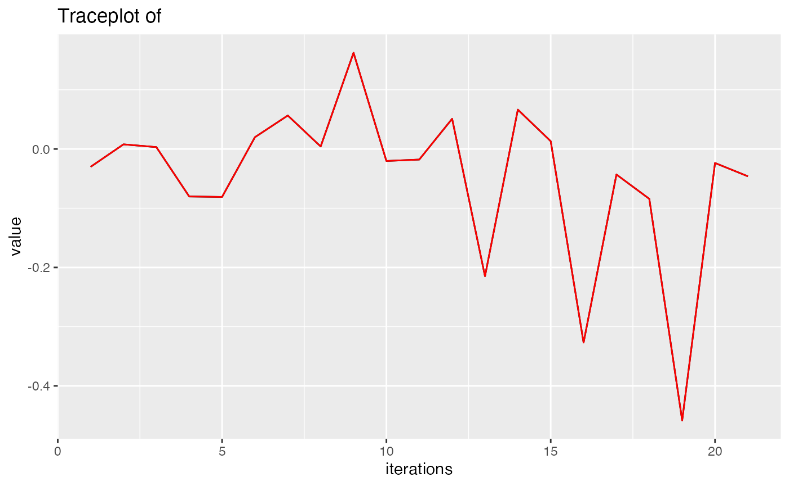
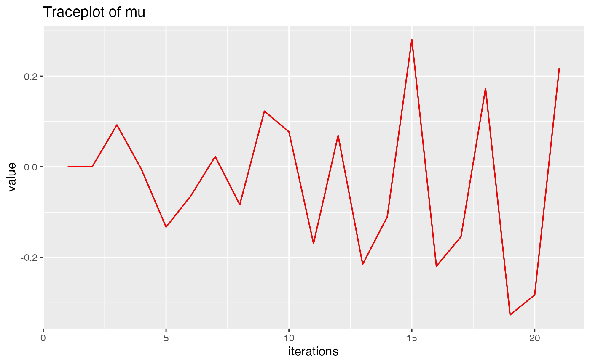
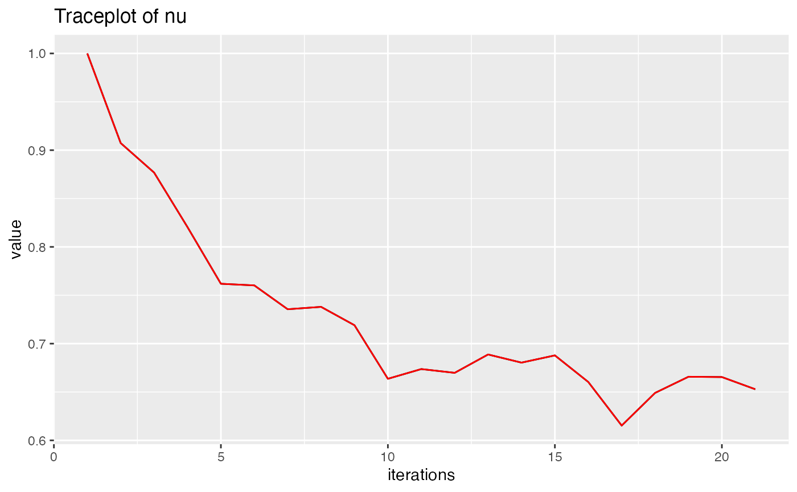
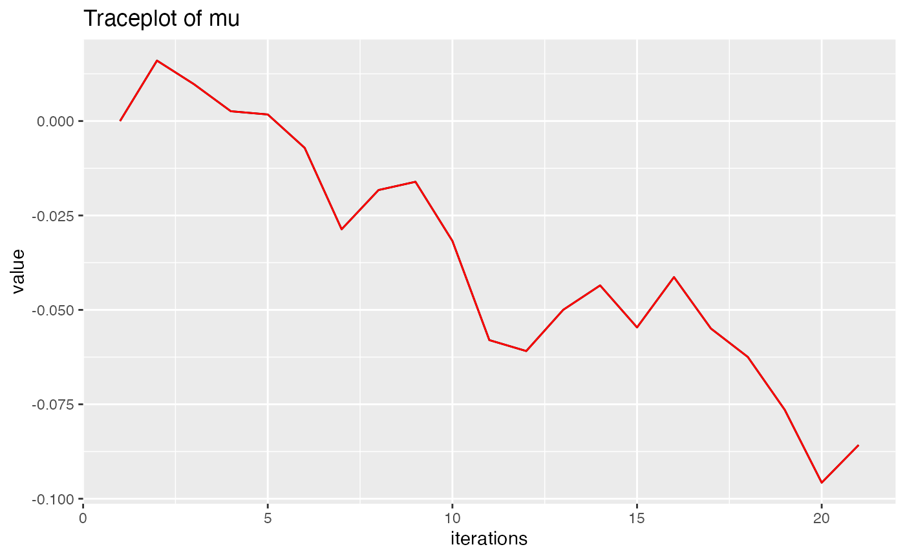
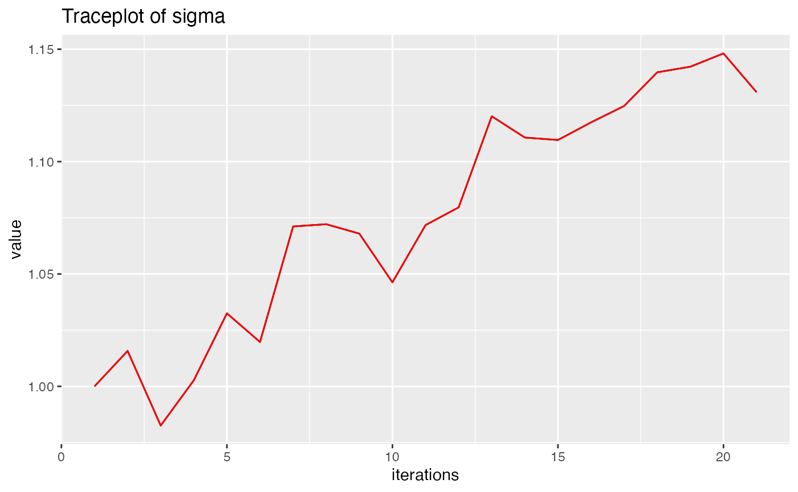
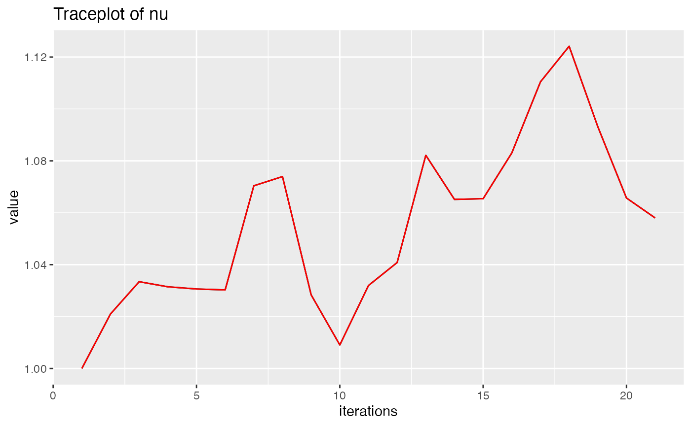

Argo float data
Argo_float_data.RmdIn this vignette we will look into a spatial example of argo float data.
Load the libraries and read argo_float data:
library(INLA)
#> Loading required package: Matrix
#> Loading required package: foreach
#> Loading required package: parallel
#> Loading required package: sp
#> This is INLA_22.11.22 built 2022-11-22 05:52:45 UTC.
#> - See www.r-inla.org/contact-us for how to get help.
#> - To enable PARDISO sparse library; see inla.pardiso()
library(ggplot2)
library(viridis)
#> Loading required package: viridisLite
library(ngme2)
#>
#> Attaching package: 'ngme2'
#> The following object is masked from 'package:INLA':
#>
#> f
data(argo_float)
head(argo_float)
#> lat lon sal temp
#> 1 -64.078 175.821 -0.0699508100 0.4100305
#> 2 -63.760 162.917 -0.0320931260 -0.2588680
#> 3 -63.732 163.294 -0.0008063143 -0.1151362
#> 4 -63.700 162.568 -0.0209534220 -0.2378965
#> 5 -63.269 169.623 0.0409914840 0.3375048
#> 6 -63.113 171.526 0.0269408910 0.2145556First we create using the mesh using INLA.
max.edge <- 1
bound.outer <- 5
loc = unique(cbind(argo_float$lon, argo_float$lat))
# nrow(loc) == nrow(dat) no replicates
mesh <- inla.mesh.2d(loc=loc,
# the inner edge and outer edge
max.edge = c(1,5),
cutoff = 0.3,
# offset extension distance inner and outer extenstion
offset = c(max.edge, bound.outer)
)
plot(mesh); mesh$n
#> [1] 1126
points(loc, col = "red")
fem_mesh = inla.mesh.fem(mesh)
Ce <- fem_mesh$c1 #<phi_i, phi_j>
C <- fem_mesh$c0 #approximation of Ce
G <- fem_mesh$g1
A <- inla.spde.make.A(mesh, loc) #dim(A) = data loc * verticesPlot the data:
ggplot(data=argo_float) +
geom_point(aes(
x = loc[, 1], y = loc[, 2],
colour = temp
), size = 2, alpha = 1) +
scale_color_gradientn(colours = viridis(100))
ggplot(data=argo_float) +
geom_point(aes(
x = loc[, 1], y = loc[, 2],
colour = sal
), size = 2, alpha = 1) +
scale_color_gradientn(colours = viridis(100))
Create a SPDE model using model_matern, fit the
model:
spde <- model_matern(
loc = loc,
mesh = mesh
)
#> as(<dtTMatrix>, "dgTMatrix") is deprecated since Matrix 1.5-0; do as(., "generalMatrix") instead
out <- ngme(
formula = temp ~ sal + f(model = spde, noise = noise_nig()),
family = "nig",
data = argo_float,
seed = 7,
control = ngme_control(
n_parallel_chain = 4,
iterations = 20
)
)
#> Starting estimation...
#> begin Constructor of Matern
#> finish Constructor of Matern
#> Total time is (ms): 658
#> Estimation done!
out
#> *** Ngme object ***
#>
#> Fixed effects:
#> beta = -0.0461, 7.6583
#>
#> Measurement noise:
#> Noise type - nig
#> Noise parameters:
#> mu = 0.217
#> sigma = 0.6
#> nu = 0.653
#>
#>
#> Latent models:
#> [[1]]
#> Ngme model: matern
#> Model parameters:
#> kappa = 0.979
#>
#> Noise type - nig
#> Noise parameters:
#> mu = -0.0858
#> sigma = 1.13
#> nu = 1.06
plot(out$noise)
# beta merr
traceplot(out, f_index = 0, param = "beta")
traceplot(out, f_index = 0, param = "sigma")
traceplot(out, f_index = 0, param = "mu")
traceplot(out, f_index = 0, param = "nu")
# spde model
traceplot(out, f_index = 1, param = "mu")
traceplot(out, f_index = 1, param = "sigma")
traceplot(out, f_index = 1, param = "nu")